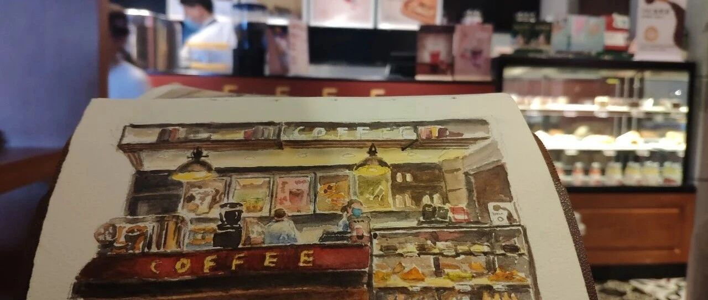

咖啡店写生

 ，这次偷懒地省略了地砖……还是太缺乏耐心，太过浮躁。
，这次偷懒地省略了地砖……还是太缺乏耐心，太过浮躁。爸爸：
有一回，我来到邻近罗马城的一个村落，寄居在当地一户人家里，为期一周左右。来到村上的这天，我按照模糊的指示找到了正确的地址。敲敲门，一开，见到农夫庞皮里奥、其老母亲罗莎奶奶以及在家中帮忙的威尔士青年汤玛士。三人正在吃午饭，给我在桌边腾出了一个位子，也盛了一盘意大利面给我。
吃了午饭，汤玛士解释，我才刚到家里，当天先不用干活几闲晃闲晃着罢了。不过，身为一个“有家教”的年轻人，我怎能容许自己在别人家中游手好闲呢？将行囊安顿好了，我到楼下厨房里，见到罗莎奶奶坐在桌边，将一大篮子的四季豆去头去尾。我示意希望帮忙，她便给了我一把小刀子。
接过刀子，我立刻开始工作。我频频抓起一把又一把的四季豆，对齐，切边，再切边，然后丢到锅子里，脑海里不断思考如何更有效率地将任务完成，同时要求自己动作再加快一点、利落一点。我越做越急切，动作变得忙乱起来。
突然间，罗莎奶奶停了下来，用一种讶异的眼神看着我。她一言不发，但我清楚地明白了她的意思：“你还好吗？”“你是不是病了？”我也停了下来，赫然发现，在我仓促急躁地切四季豆，赶着把事情做完的同时，罗莎奶奶始终在一旁自得其乐、优哉游哉地做一模一样的工作。
快一点将豆子切完，又能如何呢？
从小到大，我的长辈和社会总是要求我做个“眼明手快”“高效率”的孩子。在家里，要是擦地板动作慢了一点，就会被修理。在外游玩，大人说要起身去下一个地方时，我就必须立刻将大半杯还没喝完的饮料一口气咽到肚子里（任务迅速达成后，便获得大人的夸奖)。和妈妈去逛菜市场时，也习惯看到摆摊的人们永远动作快速利落，争抢着每一秒的时间。有一回，我在台湾的一户农家做事，身为割草新手，即使已全力赶工，却还是被眼明手快的农夫数落了一顿，叫我动作快一点。
在我的世界中，充满了一堆一堆的事情。身为一个称职的人,我的任务是将这些事情一无论功课、工作还是烦琐的杂务快快做完，好再去做更多事情。寄居罗莎奶奶的屋下，我当然也要称职，向她展示我是怎样一个勤劳的年轻人。没想到，她对这一点无法理解，甚至还可能对我急躁的表现感到不适，觉得被打搅了宁静。
我开始思索，我是否永远活在下一步的未来之中，永远迫不及待地想要脱离当下，去到下一个地方，一个永远到不了的下一个地方。因为，当我到了下一个地方时，早已忘记自己曾经期盼来到此时此刻，心智又已经到了未来的别处去了。
至于罗莎奶奶，她为何能如此不疾不徐呢？因为她已经到了她要去的地方。她要去的地方就是这里。不是过去，不是未来，就是她坐在厨房里，将四季豆去头去尾的此时此刻。她想去的地方不是回到曾经的青春年华，也不是往诣极乐世界，而是她清晨开着小车到田地的路上（听说，她是拉齐奥地区史上第一位拿到驾照的女人)，是她擦拭着瓷砖炉台上的每一点油垢和霉菌之时，是她呼喊自己满头灰发的老儿子“小庞皮几”每个皱巴巴的音节之间。
她已经到了。她永远都到了。
说到这里，我仍然认为动作利落、努力干活确实是一种美德，有助于生存，有助于创造物质的丰盛。不过，在这种心境之下，好像很容易一不小心就忘了自己在哪儿。要是一个人创造了那么多的物质、成就或是安全，却未曾真正经历、感受过他走过的任何一个片刻，未免也太冤枉了吧？
生活在现代化都市的节奏之中，人的脚步难免需要快一点。但是，人有没有办法两者兼顾、“忙而不慌”地品尝每个片刻呢？
默蓝
(下面是金惟纯写给女儿默蓝的回信)
默蓝：
你的故事像诗篇，读来甚为感动。那位在意大利农家厨房剥四季豆的老太太，不仅触动了你，也为我留下栩栩如生的画面。一个全然活着的人，就是这样影响周围的人。甚至不需语言，一个眼神就足够。这就是生命的奇迹。
就我的观察，孩子在两岁前都活在当下。用你的话说，没有要去哪里，要去的地方就在此时此刻。而在成长的过程中学习分析判断、适应环境、遵守规矩、设定目标，这些当然都是必要的，代价却是日渐用头脑多于感官和直觉，用过去和未来取代了当下。活在当下的状态，因而变得越来越稀有，甚至全然被遗忘。你能看懂意大利老太太的生命状态，欣赏她生命的优雅，表示你还记得活在当下的自在。恭喜你！
一个真实活过的人，在老年时期，会自然回归活在当下的状态。想要追求、体验和证明的，都已经历过；曾经历的，都已放下，已然心无里碍；未来已无追求，一切随缘，乃能处在当下。这种生命状态，是用做到换来的，值得被欣赏！
至于年轻人，如果向往活在当下的状态，就得刻意修炼了。通过觉察呼吸和身体感官，通过不断清理情绪和思维，通过不断修正言行举止，也可以让生命流畅轻盈，有能力在需要时处在当下。
这其中一个重要的理解，是关于目标和旅程。我们需要目标，让自己有方向和动力，让生命聚焦，并检查目前的状态。但若为目标而忽略旅程，难免在过程中充满焦虑，甚至完全错过生命的美好风景。最重要的，是无法在追求过程中，让自己的生命内在产生变化，甚至位移。这样做，最后人生必将落空，但如要避免，如你所理解的，并不容易。
其实厨房里的老太太也有目标（把四季豆切好，为家人做美味晚餐)，但她同时享受着“旅程”。这种状态，我们如今称之为“心流”，就是“在做之人”和“所做之事”合而为一，臻至忘我。
我喜欢把这种状态称之为“做进去”：全神贯注，带着感受做事，观照做事时内在心绪起伏，做到被自己感动，处于大欢喜状态。我记忆中“做进去”的场景，比较频繁发生于做教育义工的那段时光。事后回想，因为是做义工，没有个人目标，也没有与别人比较，乃能心无旁鹜，一做就进去。也许这就是做进去的秘密。
相信这些道理你都懂，老爸也没意大利老太太那种境界。分享一点自己的感触，算是狗尾续貂吧！
爸爸